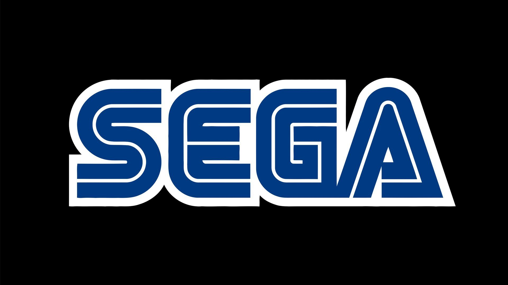
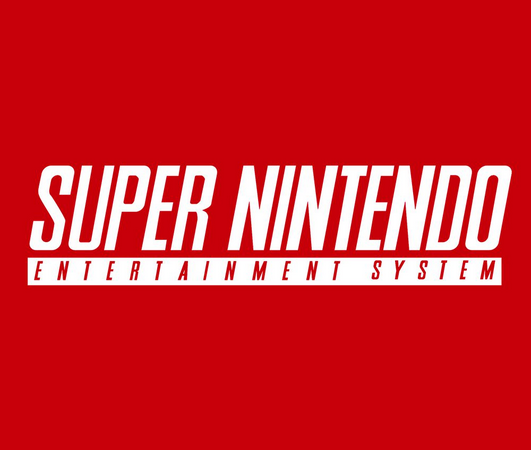
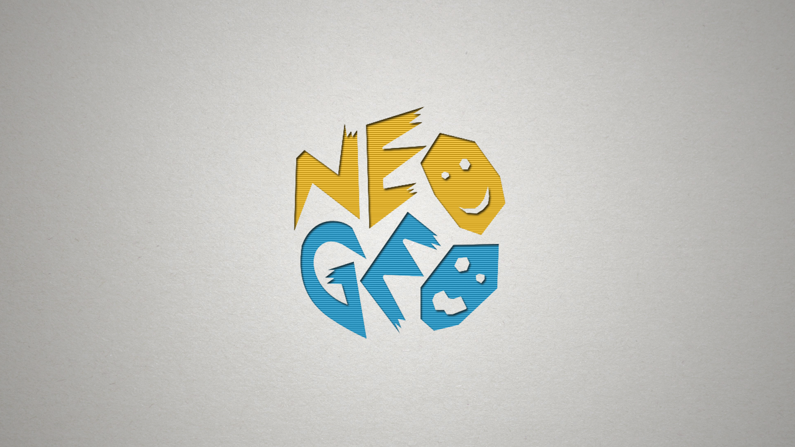
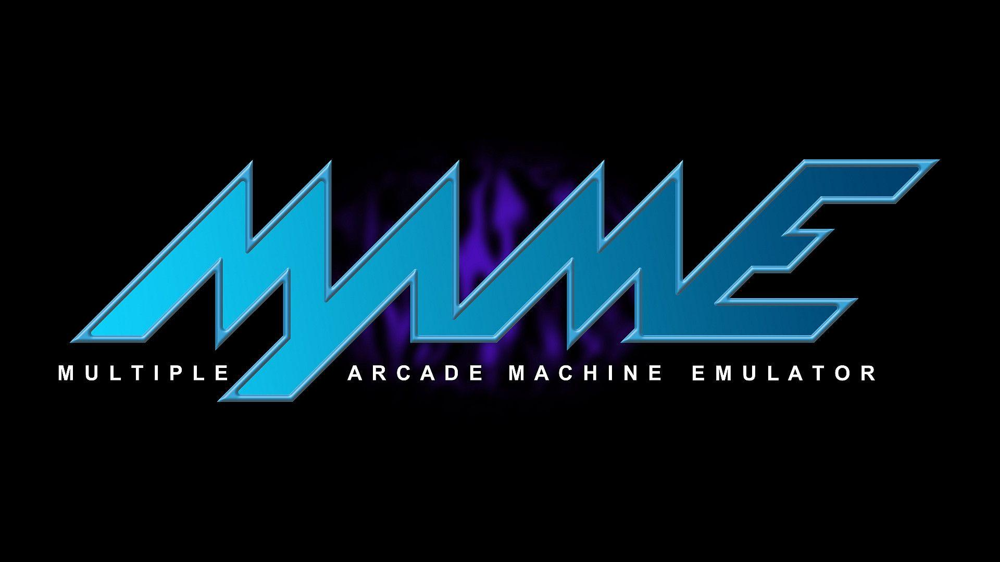
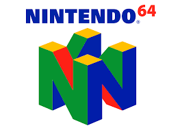
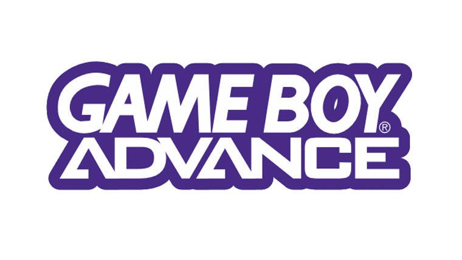
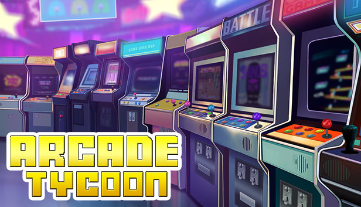
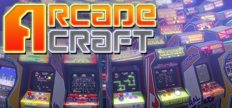
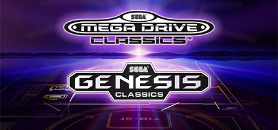
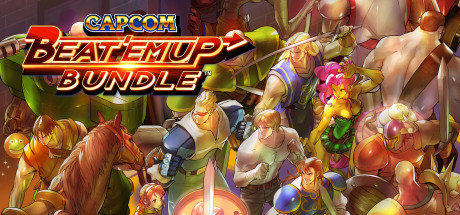

O Velho Arcade
Que saudade temos daqueles tempos do Megadrive e do Super Nintendo não é mesmo? E de gastar trinta centavos pra comprar uma ficha de Metal Slug? Lembra disso? No site Velho Arcade você encontrará pacotes com emuladores e roms, todos já organizados para que você só tenha o trabalho de baixar! Lógico que você vai configurar os controles como achar melhor, mas deu pra entender o que queremos dizer né? (huehuehue) Sejam muito bem vindos! Se divirtam bastante! Afinal de contas, esse Arcade é pra vocês!
Pacotes de Emuladores
Mega Drive
Emulador de Mega-Drive configurado e com um pacote de ROMS. Faça o Download pelo MediaFire, configure os controles e comece a jogar!
Super Nintendo
NeoGeo
Mame
Emulador de Fliperama configurado e com ROMS (já tem Cadillacs and Dinosaurs e Alien vs Predator!!!), é só baixar e configurar os controles!
Nintendo 64
GameBoy Advance
Emulador de GameBoy Advance configurado e com um pacote de roms. Os jogos mais famosos da plataforma estão no pacote! É só baixar e ser feliz. (E configurar os controles).
Sugestões
Arcade Tycoon
Projete incríveis Centros de Fliperama, compre uma seleção de máquinas de fliperama, gerencie funcionários problemáticos neste jogo colorido e bem-humorado. Inspirado por Two Point Hospital, Prison Architect e Planet Coaster.
ArcadeCraft
Entre no incrível mundo dos donos de Fliperamas! Jogue no inicio da revolução dos fliperamas nos anos 1980’s, comprando e organizando os arcades para que seus clientes joguem! Customize seu fliperama e aumente sua popularidade!
Sega Classics
Vários jogos classicos do nosso amado MegaDrive reproduzidos na sua conta Steam! Vamos lá gente, já pegamos tantos ROMS para o MD, que tal dar uma gorjetinha pra SEGA?
Capcom Beat'em up
Reviva os dias de glória dos jogos de arcade competitivos com o Capcom Beat 'Em Up Bundle! Esta extensiva coleção inclui sete jogos clássicos, cada um com várias opções multijogador e funcionalidades online!